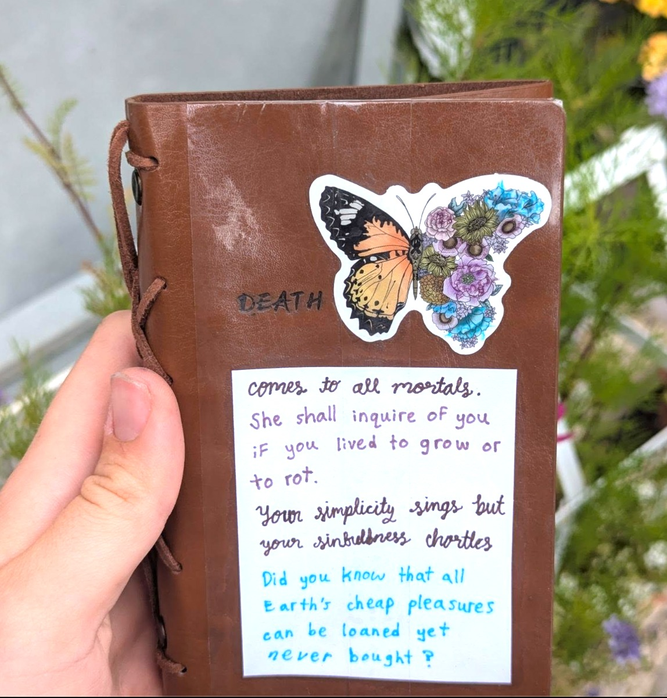
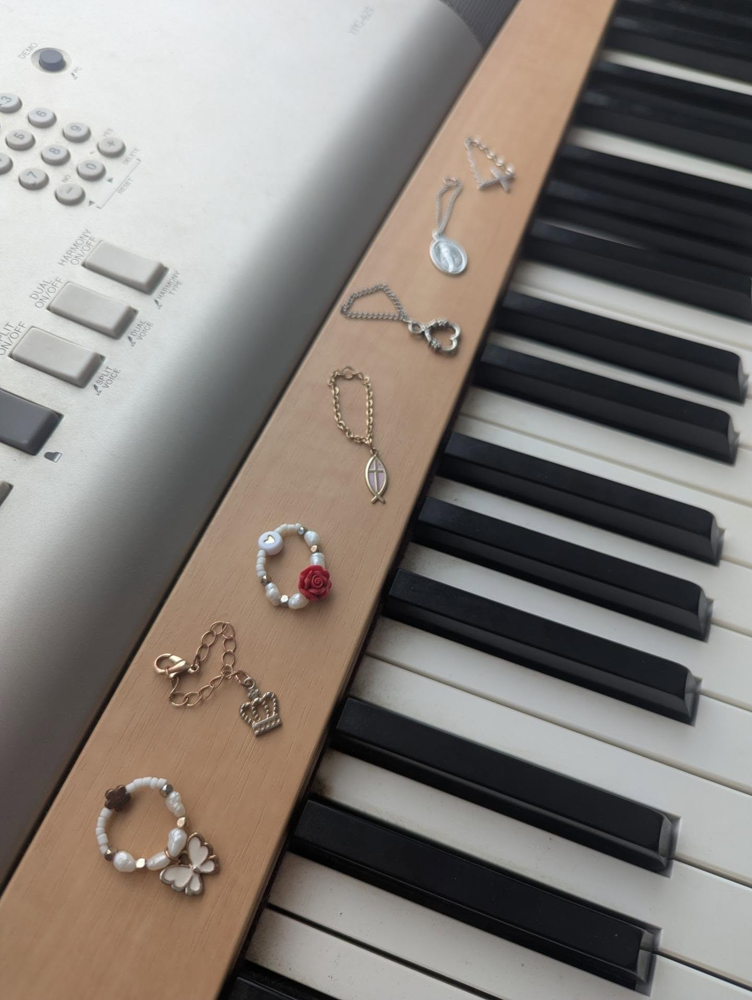
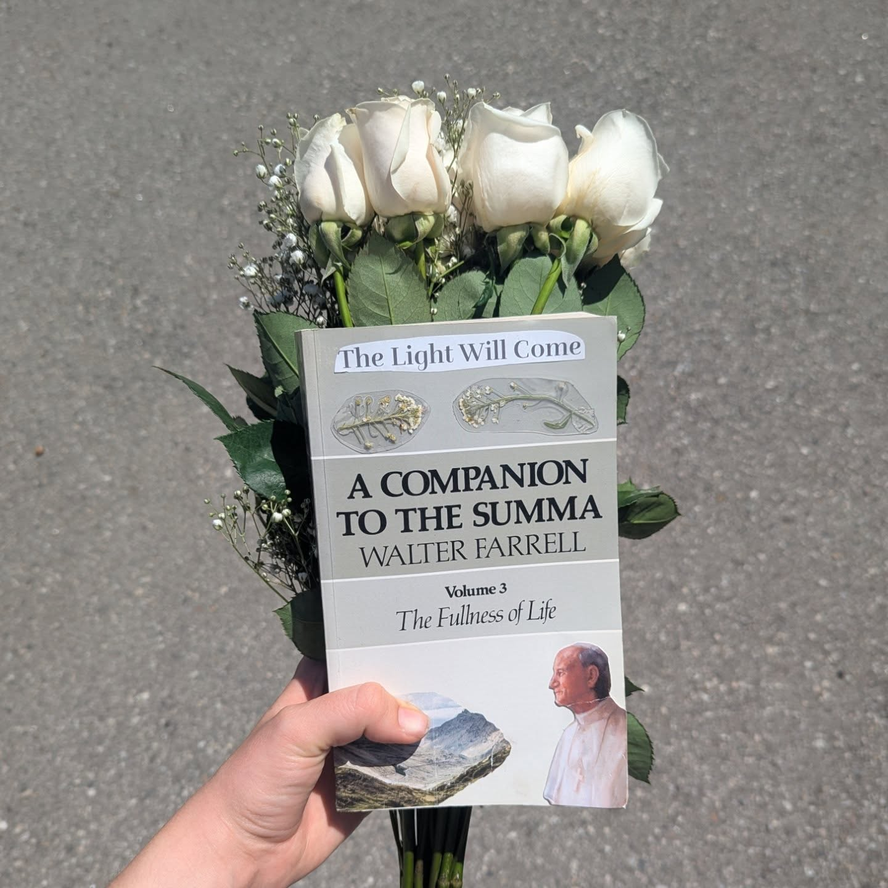
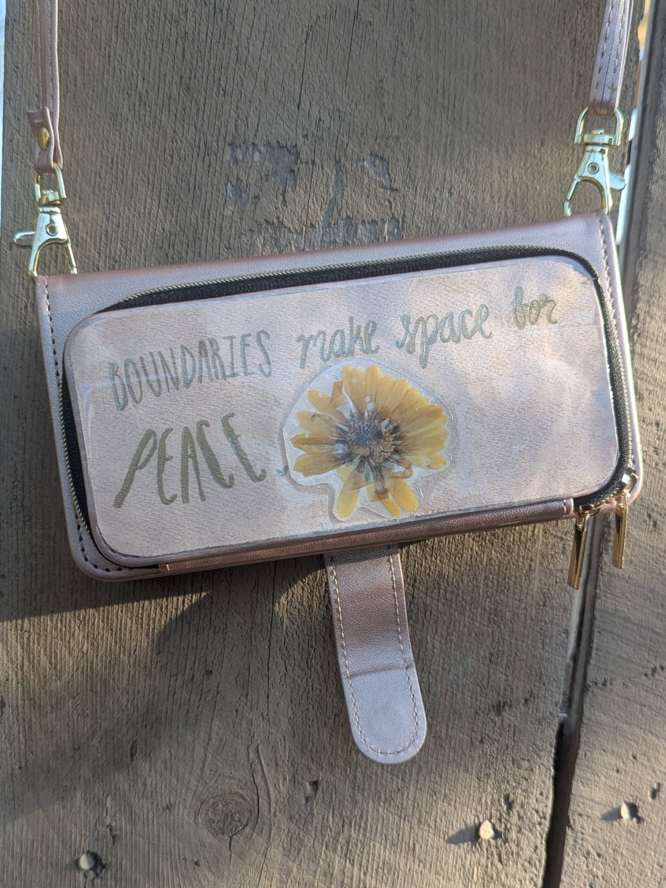

Butterfly within a Breath of Death

Journal design for reflecting on what steps lead me closer to meadows and which take me closer to cliffs
Four pieces from the last year, most of them made between problem sets as a way of resetting.

Journal design for reflecting on what steps lead me closer to meadows and which take me closer to cliffs

Each one when worn is a continual reminder that I am trying to live by Great Is Thy Faithfulness

Adding my own soul's expression to the cover of the third volume of A Companion to the Summa

Always reminding myself that with great freedom comes great responsibility.